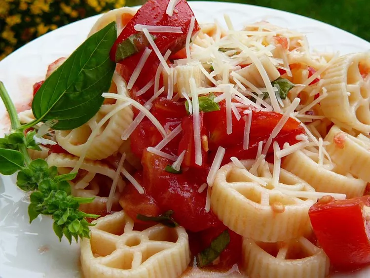

Pasta alla Checca

Description
Checca sauce is a wonderful uncooked sauce made with fresh garden tomatoes —
and you don't have to cook a thing except for the pasta!
Ingredients
- 5 tomatoes, seeded and diced
- 4 cloves garlic, minced
- 1/2 cup chopped fresh basil
- 1/2 cup olive oil
- salt to taste
- 2 tablespoons grated parmesan cheese
- 1 pound pasta
Directions
- Combine tomatoes, garlic, basil, and olive oil in a non-metal bowl.
Stir in salt. Cover with plastic wrap. Allow to sit at room temperature
at least 2 hours, or as long as 10 hours.
- Cook pasta in a large pot of boiling salted water until al dente. Drain.
Pour uncooked sauce over hot pasta, and toss. Add grated Parmesan cheese
to your liking.